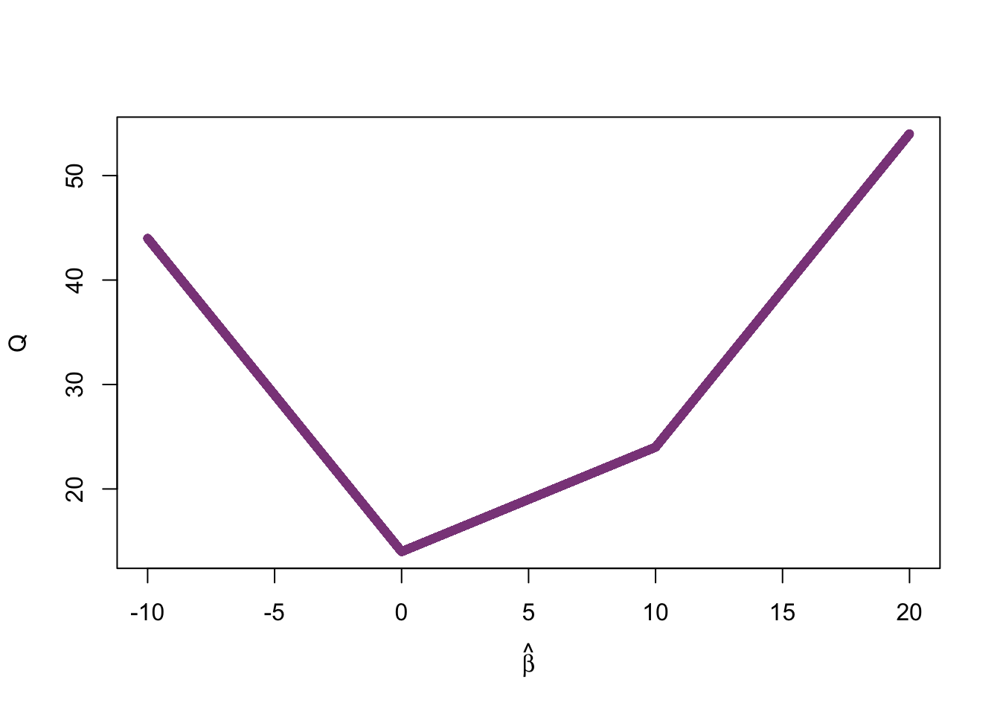

1 Метод наименьших квадратов
Конспект: Бердникович Алеся, Головина Мария
дата: 05.09.2016
1.1 Основная задача
Маша каждый день ловит покемонов и решает задачи по теории вероятностей. Пусть x и y - случайные величины, \(x_i\) - количество решённых в i-тый день задач, а \(y_i\) - количество пойманных в i-тый день покемонов. Результаты наблюдения за действиями Маши представлены в таблице:
| День | \(x_i\) | \(y_i\) |
|---|---|---|
| 1 | 1 | 10 |
| 2 | 2 | 0 |
| 3 | 0 | 4 |
Необходимо определить, как количество пойманных за день покемонов зависит от количества решённых за день задач. Предположим, что регрессионная модель имеет линейный вид \(y_i = \beta_1+\beta_2 x_i + \epsilon_i\), где коэффициенты \(\beta_1, \beta_2\) неизвестны и должны быть оценены, а \(\epsilon_i\) - случайная величина. Тогда прогнозируемая зависимость имеет вид \(\hat{y}_i=\hat{\beta}_1+\hat{\beta}_2x_i\).
1.1.1 Метод наименьших квадратов (OLS):
\(y_i-\hat{y}_i\) - ошибка прогноза, которую нужно минимизировать. Штрафная функция:
\[ Q(\hat{\beta}_1,\hat{\beta}_2) = (y_1-\hat{y}_1)^2 + (y_2-\hat{y}_2)^2 + (y_3-\hat{y}_3)^2 = (y_1-(\hat{\beta}_1+\hat{\beta}_2 x_1))^2 + (y_2-(\hat{\beta}_1+\hat{\beta}_2x_2))^2 + (y_3-(\hat{\beta}_1+\hat{\beta}_2x_3))^2 \to min_{\hat{\beta}_1,\hat{\beta}_2} \]
1.1.2 Метод наименьших модулей (LAD):
Альтернативный метод минимизации ошибок прогноза. Отличие заключается в виде штрафной функции: \[Q(\hat{\beta}_1,\hat{\beta}_2) = |y_1-\hat{y_1}|^2 + |y_2-\hat{y}_2|^2 + |y_3-\hat{y}_3|^2 \to min_{\hat{\beta}_1,\hat{\beta}_2}\]
Найдём \(\hat{\beta}_1,\hat{\beta}_2\) в нашей задаче методом наименьших квадратов: \[Q(\hat{\beta}_1,\hat{\beta}_2) = (y_1-(\hat{\beta}_1+\hat{\beta}_2x_1)^2 + (y_2-(\hat{\beta}_1+\hat{\beta}_2x_2))^2 + (y_3-(\hat{\beta}_1+\hat{\beta}_2x_3))^2\] \[Q(\hat{\beta}_1,\hat{\beta}_2) = (10-(\hat{\beta}_1+\hat{\beta}_2)^2 + (0-(\hat{\beta}_1+2\hat{\beta}_2))^2 + (4-(\hat{\beta}_1))^2 \to min\] \[\frac{\partial Q}{\partial \hat{\beta}_1} = -28 + 6\hat{\beta}_1 + 6\hat{\beta}_2 = 0\] \[\frac{\partial Q}{\partial \hat{\beta}_2} = -20 + 6\hat{\beta}_1 + 10\hat{\beta}_2 = 0\] \[\hat{\beta}_1 = \frac{20}{3}, \hat{\beta}_2 = -2\]
Искомая оценка зависимости числа пойманных покемонов от числа решённых задач: \[\hat{y}_i = \frac{20}{3} - 2x_i\]
1.2 Реализация в R:
x <- c(1, 2, 0)
y <- c(10, 0, 4)
md <- data.frame(problem = x, pokemon = y)
md## problem pokemon
## 1 1 10
## 2 2 0
## 3 0 4Восстановление линейной зависимости методом наименьших квадратов:
model_1_ols <- lm(data = md, pokemon~problem)
summary(model_1_ols)##
## Call:
## lm(formula = pokemon ~ problem, data = md)
##
## Residuals:
## 1 2 3
## 5.333 -2.667 -2.667
##
## Coefficients:
## Estimate Std. Error t value Pr(>|t|)
## (Intercept) 6.667 5.963 1.118 0.465
## problem -2.000 4.619 -0.433 0.740
##
## Residual standard error: 6.532 on 1 degrees of freedom
## Multiple R-squared: 0.1579, Adjusted R-squared: -0.6842
## F-statistic: 0.1875 on 1 and 1 DF, p-value: 0.7399Подключаем нужный пакет:
library("quantreg")Если пакета не установлен, то это исправляется командой
install.packages("quantreg")Восстановление линейной зависимости методом наименьших модулей:
model_1_lad <- rq(data = md, pokemon~problem)
summary(model_1_lad)##
## Call: rq(formula = pokemon ~ problem, data = md)
##
## tau: [1] 0.5
##
## Coefficients:
## coefficients lower bd upper bd
## (Intercept) 4.000000e+00 -1.797693e+308 1.797693e+308
## problem -2.000000e+00 -1.797693e+308 1.797693e+308Предположим теперь иную модель зависимости \(y_i = \hat{\beta}x_i\), ищем оценку единственного неизвестного коэффициента \(\hat{\beta}\) с помощью метода наименьших модулей. Штрафная функция примет вид \[Q(\hat{\beta}) = |10-\hat{\beta}| + |0-\hat{\beta}| + |4-0| \to min\] Точки изломов функции находятся в нулях подмодульных выражений: \(\hat{\beta}=0\) и \(\hat{\beta}=10\). Функция принимает наименьшее значение при \(\hat{\beta}=0\) (см. график), что говорит об отсутствии зависимости числа пойманных покемонов от числа решённых задач.
1.2.1 График штрафной функции:
x <- seq(-10, 20, 0.001)
fx <- (x <= 0) * (14 - 3 * x) +
(x > 0 & x < 10) * (14 + x) +
(x >= 10) * (3*x - 6)
plot(x = x, y = fx, xlab = expression(hat(beta)), ylab = 'Q', pch = 20, col = 'orchid4')
1.3 Домашнее задание
Вывести общие формулы для коэффициентов \(\hat{\beta}, \hat{\beta}_1, \hat{\beta}_2\), используя МНК-оценку, при условии, что:
- \(y_i = \beta x_i + \epsilon_i, \ \hat{y}_i = \hat{\beta} x_i\);
- \(y_i = \hat{\beta}_1 + \hat{\beta}_2 x_i + \epsilon_i, \ \hat{y}_i = \hat{\beta}_1+\hat{\beta}_2 x_i + \epsilon_i\).